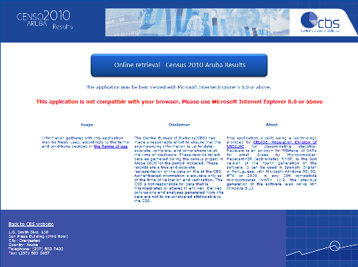
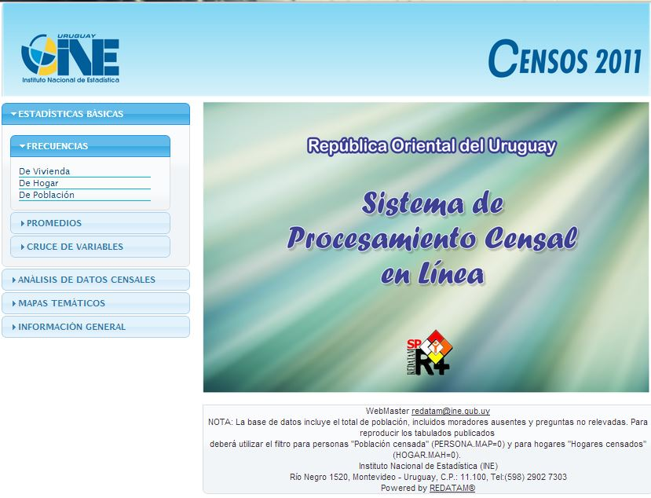

Disseminação de Estatísticas e Censos
- Microdados - Maior aproveitamento da informação em alta velocidade
- Dados Agregados - Integração de várias fontes e/ou séries de dados
- Saídas - Tabulações, Gráficos, Mapas Temáticos
- Ecológico - Melhorias e novidades disponíveis a todos
Aplicações Recentes
-

CBS::Aruba - Online retrieval of census 2010 data (redatam)
Available now! CBS web-application for making your own tables and crosstables in data of the census 2010 project of Aruba.
-

Sistema de Procesamiento Censal en Línea con REDATAM